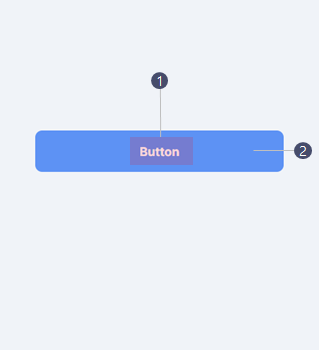
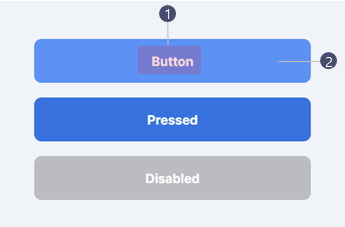
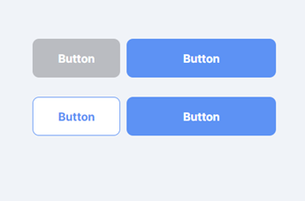
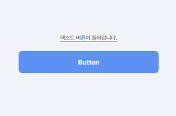
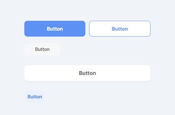
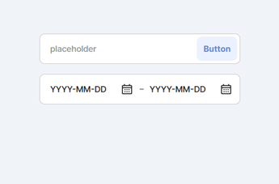
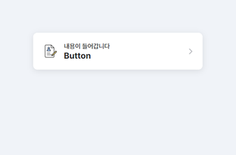

- Foundation
- Button
- Bottom Sheet
- Dropdown
- List
- Search
- Selection Controls
- Tab
- Text Field
Button
- Definition
- Button은 사용자로 하여금 한번의 탭으로 액션을 실행하거나 선택하도록 한다.
- 1Button은 사용성을 고려하여 최소한의 사이즈, 여백, 간격을 준수해야 한다.
- 2사용자가 다른 화면 요소들 사이에서 Button을 쉽게 발견할 수 있는 형태로 설계해야 한다.
- 3각 Button의 강조 및 위계 정도를 나타내기 위해 Button의 형태, 색상, 레이블 텍스트 등을 고려하여 설계해야 한다.
- 4Button은 화면 내에서 사용자가 취할 액션을 예상할 수 있도록 명확한 레이블을 제공해야 한다.
- 5프로세스 내에서 사용자가 테스크를 빠르게 수행할 수 있도록 동일한 위치와 스타일을 가진 Primary Button으로 제공해야 한다.
- 6사용자의 액션에 따른 피드백을 명확히 제공해야 한다.
- Anatomy
-

- 1Button Text
해당 Button의 기능을 표시한다.
Button의 타입에 따라 아이콘을 함께 사용할 수 있다. - 2Container (Optional)
사용자가 다른 화면 요소들 사이에서 Button을 쉽게 발견할 수 있는 형태로 설계해야 한다.
- 1Button Text
- Types
-
Main Contained Button콘텐츠 내 하단 액션버튼으로 사용
Main Contained Button [Button이 2개인경우]4:6 비율로 정렬
Main Contained Button [텍스트버튼을 추가한경우]상하로 정렬

-
Contained Button콘텐츠 내 서브 버튼으로 사용
Contained Button & Icon Buttoninput박스 내에 버튼으로 사용
Icon Button콘텐츠 내 배너타입 버튼용으로 사용
